地政学
チェンナイはベンガル湾に面し、スリランカ、東南アジア、インド洋航路へ近い南インドの玄関です。港湾、海軍、州都機能、IT回廊、工業団地が重なり、国内産業と海上安全保障を結びます。沿岸政治の焦点にもなります。

🇮🇳 インド / アジア / World City Atlas
ベンガル湾に面する南インドの港湾都市です。自動車産業、IT、医療、映画、古典音楽、寺院、浜辺、洪水と暑熱が、タミル社会の都市生活を形づくります。
都市の骨格
チェンナイはベンガル湾の海岸線、内陸へ伸びる高速道路と鉄道、周辺工業地帯、寺院と市場、映画と音楽の文化圏を結び、南インドの成長と生活を映します。
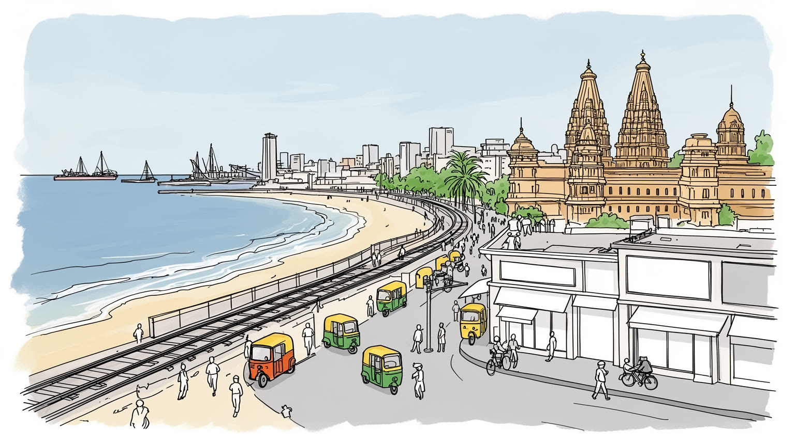
チェンナイはベンガル湾に面し、スリランカ、東南アジア、インド洋航路へ近い南インドの玄関です。港湾、海軍、州都機能、IT回廊、工業団地が重なり、国内産業と海上安全保障を結びます。沿岸政治の焦点にもなります。
自動車、部品、IT、BPO、港湾物流、医療、教育、映画、繊維が雇用を作ります。工場労働者、技術者、看護師、港湾作業員、配達、清掃、家事労働が支え、屋台と路上経済も近くで動きます。技能教育と賃金も今も課題です。
タミル語、寺院、教会、モスク、カルナータカ音楽、映画音楽、出版、大学文化が都市の声を作ります。マルガジ音楽季、寺院祭、CSKの熱気、チェス、カバディも日常に重なります。朝のマリーナの運動も街のリズムです。
観光客はマリーナ・ビーチ、カパーリーシュワラ寺院、サントメ聖堂、博物館、市場、南印料理を巡りますが、住民には暑さ、洪水、水不足、通勤、住宅費が迫ります。名所と生活の距離が近い海岸都市です。課題も残ります。
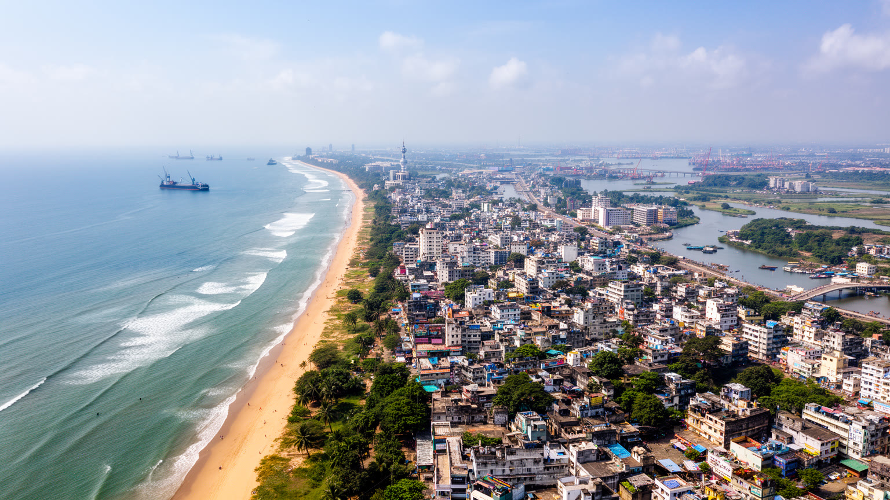
チェンナイの地理は、ベンガル湾に沿う長い砂浜と、低く平らな海岸平野から始まります。マリーナ・ビーチの開放感は都市の象徴ですが、その背後にはクーム川、アディヤール川、バッキンガム運河、湿地、湖沼、排水路が複雑に絡む水の都市があります。早朝の浜辺では散歩、ランニング、ヨガ、少年たちのクリケットが始まり、湿った海風、砂の匂い、オートリキシャの音が一日の感覚を作ります。夕方には家族連れも集まります。内陸へ少し入れば古い住宅地、寺院町、市場、大学、官庁が続き、南へ行くとIT回廊、工業団地、郊外住宅が伸びます。海岸都市であることは、交易と文化交流を呼び込む力である一方、高潮、サイクロン、豪雨、浸水への弱さも抱えます。平坦な地形では水が抜けにくく、湖や湿地を埋めた開発は雨季の被害を大きくします。浜辺は市民の散歩道であり、漁業者の仕事場であり、政治集会や宗教儀礼の舞台でもあります。海へ近い地域では塩害、地下水の悪化、高潮時の避難も生活条件になります。砂浜を守ることは景観保存だけでなく、漁業、観光、防災、公共空間を同時に守る課題です。都市の地図には、見えにくい水路と消えた湿地の記憶も刻まれています。郊外化が進むほど、川上の開発と海辺の浸水は一つの問題になります。水の道を都市計画に戻すことが、次の成長の前提になります。
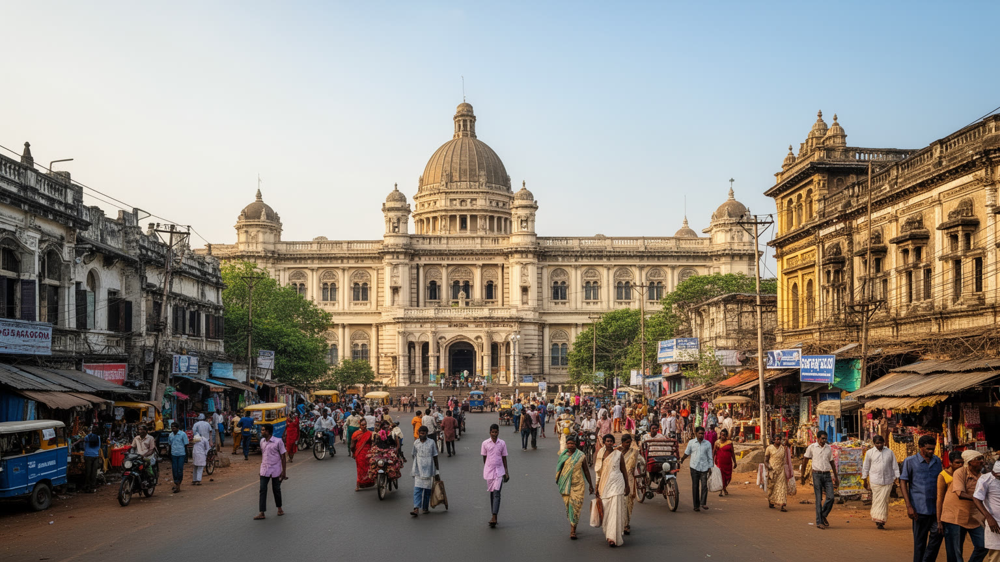
チェンナイはタミル・ナードゥ州の州都であり、州政府、裁判所、報道、大学、文化機関、党派政治が集中します。南インドの大都市としての重みは、企業や港だけでなく、タミル語を軸にした政治文化にもあります。言語政策、教育、福祉、映画スターと政治、カースト、農村との関係、スリランカ・タミル社会への感情は、街路のポスター、新聞、テレビ討論、タミル語ニュースの見出しに現れます。州都であることは雇用と公共投資を呼び、病院、大学、官庁、交通機関を集めるが、抗議、選挙、災害対応、行政手続きの負荷も都市へ集中させます。チェンナイの政治はデリーの中央集権とは違い、地域言語の誇りと社会正義の運動、映画文化の大衆性が深く絡みます。官庁街の制度だけを見ても、この都市の政治的な力は分かりません。バス停の会話、大学の議論、映画館の記憶、福祉制度を使う家庭、洪水時の自治会の動きまで含めて、州都の政治は生活に近いです。選挙期には壁画、旗、集会、テレビ討論が都市の視覚を変え、災害時には行政の速さと地域の助け合いが試されます。公共病院や配給制度、学校給食の記憶も、政治を抽象論ではなく家計の支えとして感じさせます。子どもの栄養、高齢者の医療、学生の奨学金も政治の実感です。市民にとって政治は、道路、排水、学校、病院の順番を決める実務でもあります。
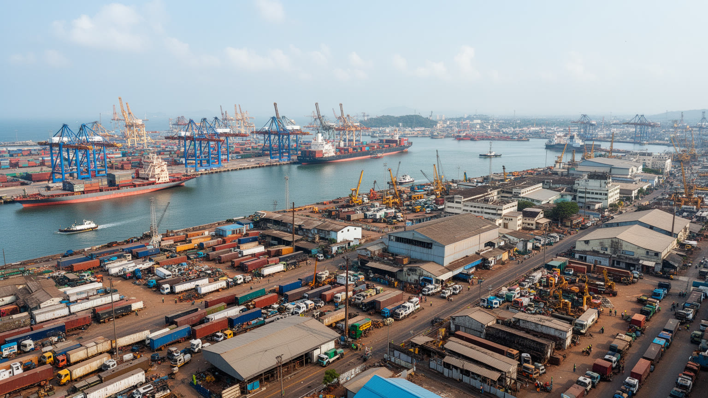
チェンナイ都市圏は、インド有数の自動車と部品産業の集積地であり、その力を港湾物流が外へ開いています。市街地の外側には完成車工場、部品メーカー、技術センター、倉庫が連なり、高速道路とチェンナイ港、周辺港湾が国内外の市場へ結びます。工場は熟練工、技術者、期間労働者、品質管理、食堂、清掃、警備、配送の仕事を生み、周辺の町に寮、賃貸住宅、学校、診療所を増やしてきました。港では荷役、通関、船会社、修理、保険、トラック運転の仕事が動き、輸入部品の到着や輸出車両の積み出しが工場の操業を左右します。製造業の成功は工場の門の中だけで決まりません。港の混雑、道路の冠水、電力、水、技能教育、女性が働き続けられる環境、下請け企業の支払い条件が、都市圏全体の競争力を左右します。電動化は新しい投資を呼ぶ一方、既存の部品工場や技能の再訓練を迫ります。港湾道路の整備は物流を速くするが、沿道の住宅地には騒音や排気の負担も残します。漁業者、港湾労働者、工場労働者、技術者、アプリ配達員、屋台商が同じ海岸平野で暮らすため、産業政策は雇用だけでなく住宅、交通、環境管理を含む必要があります。車を作り、検査し、港へ運び、世界市場へ送り出す時間の背後には、夜明けの通勤、列車の混雑、港の待機、部品納入の遅れを調整する現場の判断があります。
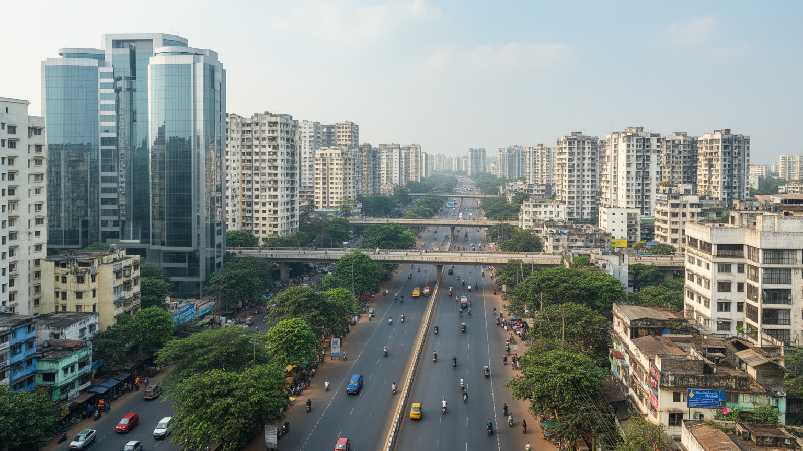
チェンナイ南部のIT回廊は、都市の新しい成長軸です。オールド・マハーバリプラム・ロード沿いにはソフトウェア企業、BPO、データ関連企業、スタートアップ、研修施設、集合住宅、モールが並び、工業都市としてのチェンナイに知識産業の層を加えました。IIT Madrasやアンナ大学、医療系大学、工科系教育、英語教育の蓄積は、若い専門職を生み、地方から来た学生に就職の入口を与えます。ですがITの成長は、交通渋滞、家賃上昇、湿地の開発、夜勤、契約労働、ジェンダー安全の問題も伴います。ガラスのオフィスを支えるのは、清掃、警備、食堂、送迎車、配達、建物管理の労働であり、給与と生活条件には大きな差があります。教育機関は社会上昇の道を開く一方、学費、言語、カースト、地域差によって機会は均等ではありません。コードを書く人だけでなく、通勤バスを待つ人、夜勤明けの食堂、資格試験に備える学生、家族への送金を見る必要があります。大学周辺の下宿、試験予備校、安い食堂、共有オフィスは若者の移動を受け止める小さなインフラです。学生はチェス、クリケット、カバディ、映画音楽の話題を持ち込み、キャンパスと街の夜を近づけます。英語とタミル語の使い分けも、職場の機会と家庭の文化をつなぎます。研究病院や工科大学との近さは、医療機器、データ、製造を結ぶ新しい仕事も育てます。
チェンナイの文化的な力は、Kollywoodのタミル映画、カルナータカ音楽、バラタナティヤム、出版、演劇、テレビ、食文化が近くで動く点にあります。コダンバッカムを中心とする映画産業は、俳優、監督、作曲家、脚本家、編集、振付、衣装、照明、配給、劇場、ファン文化を結び、映画音楽はオートリキシャ、結婚式、学生街の夜にも流れます。映画のスター性は州政治とも結びつき、娯楽は言語、階層、ジェンダー、正義を語る場にもなります。一方、冬のマルガジ季にはカルナータカ音楽会と舞踊公演が集中し、寺院、ホール、家庭、食堂が文化の暦を作ります。古典芸能は洗練された都市文化として評価されるが、誰が舞台に立てるのか、どの共同体の表現が中心に置かれるのかという問いもあります。映画館の熱気と音楽ホールの静けさ、街角のポスターと家庭の練習、CSKの試合日に黄色く染まる会話、チェス教室の集中を同時に見る必要があります。録音スタジオ、ダンス教室、小出版社、タミル語テレビ、ネット配信は、表現の入口を広げています。市場の歌、結婚式の音楽、寺院の太鼓も都市の音風景を作ります。高い芸術と大衆文化が近い距離で響くことが、チェンナイらしさを強めています。舞台設営、字幕、配信編集、楽器修理、衣装作りの仕事まで見ると、文化都市の厚みがさらに見えます。
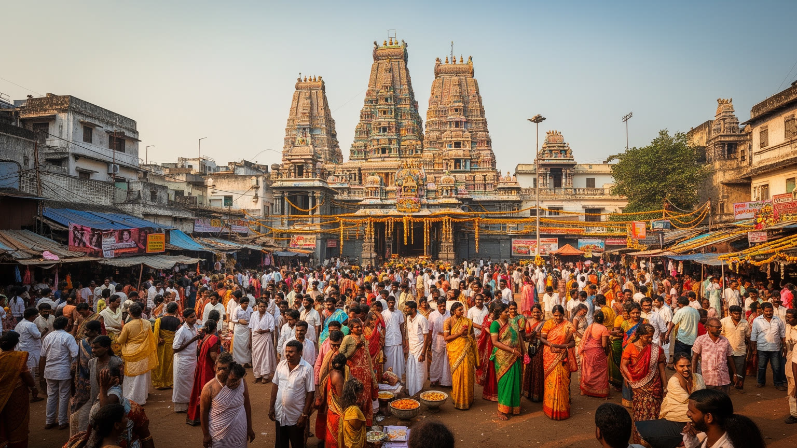
チェンナイの宗教生活は、寺院都市としての深い層と、植民地港町としての多宗教性を併せ持ちます。マイラポールのカパーリーシュワラ寺院、サントメ聖堂、モスク、地域の小さな祠、家庭の祭壇、墓地、巡礼路が、住宅地や市場の近くにあります。寺院祭の日には花、灯明、太鼓、山車、行列、屋台、親族訪問が街路の使い方を変え、子どもは菓子や玩具の露店へ寄り、高齢者は日陰と座る場所を探しながら暦を確かめます。寺院は信仰だけでなく、商い、慈善、結婚、地域の相談を支える場所になります。キリスト教とイスラムの共同体も、教育、医療、食、慈善、葬送を通じて都市社会に深く関わります。宗教は観光の色彩である前に、住民が家族の節目を守り、故郷とのつながりを保ち、困った時に助け合う制度です。一方で、道路使用、音、混雑、政治的な動員、共同体間の緊張を調整する必要もあります。祈りを読むには、壮麗な建築だけでなく、朝に花を買う人、祭礼で交通を整理する人、教会の学校へ通う子ども、モスクの近くで商う人の生活を見る必要があります。海辺での祈り、墓参、年中行事は、都市が水と祖先をどう結びつけるかも示します。信仰施設の周囲には花市場、菓子店、音響、衣装、写真、交通の仕事が生まれます。祭りの後片付けや水辺の清掃も、信仰と都市管理が交わる現場です。
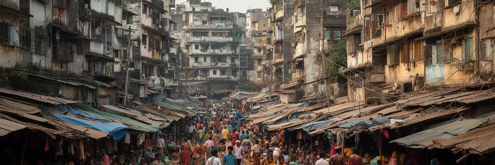
チェンナイの日常生活は、住宅、通勤、水、暑さの条件に強く左右されます。中心部には古い一戸建て、アパート、市場に近い密集住宅があり、郊外には高層集合住宅、ゲート付き住宅、工場労働者の住まい、非公式な居住地が広がります。IT回廊や工業地帯が伸びるほど、職場に近い土地の価格は上がり、低所得の労働者は遠い場所から通うか、不安定な住まいを選ばざるを得ません。バス、郊外鉄道、メトロ、オートリキシャ、二輪車は生活を支え、車内の呼び声、発車ベル、クラクションが湿った空気に混じります。学校帰りの子ども、薬局へ向かう高齢者、配達員も同じ道路を使います。水道の不足、地下水への依存、タンク車、雨季の浸水、夏の停電は、家計と健康に直結します。家事労働者、警備員、看護師、配達員、工場労働者、学生は、住宅費と移動時間の間で毎日調整しています。暮らしを読むには、朝のバス停、共同の水、屋上の貯水槽、日陰を探す歩道、夕食を買う市場を見る必要があります。共同住宅の管理費、学校への距離、介護、女性の夜間移動、子どもの遊び場、高齢者が涼める場所も住みやすさを決めます。洪水で一階が使えなくなる地域では、住まいは資産であると同時にリスクでもあります。近隣の助け合い、自治会、寺院や教会の支援は、公的サービスの隙間を埋めることも多いです。
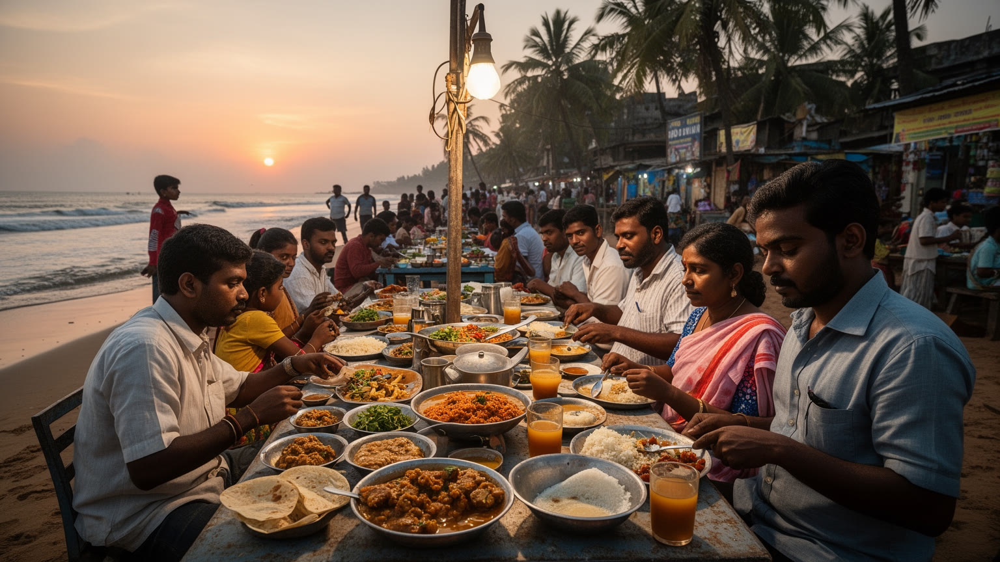
チェンナイの食は、南インドの米食文化、タミル家庭料理、港町の魚、大学と職場の食堂、宗教的な食の規則が混じり合っています。イドリ、ドーサ、サンバル、ラッサム、ビリヤニ、ミールス、フィルターコーヒー、海鮮料理、屋台の軽食は、朝の通勤、昼休み、家族の外食、祭礼の食事を支えます。魚市場では夜明け前から競り、氷、海水、声が混ざり、野菜、花、香辛料、ココナツ、バナナの葉、日用品の売り場では価格交渉、搬入、女性の買い物、配達、露店の規制が日々の経済を作ります。T NagarやPondy Bazaarではサリー、金飾り、靴、携帯品、軽食が並び、買い物と路上経済が密接に重なります。高級レストランやカフェが増えても、都市の胃袋を支えるのは、小さな食堂、家庭の台所、職場に近い安い店です。暑さと湿度は保存や衛生を難しくし、豪雨や洪水は市場と配送を止めることがあります。食文化を観光の楽しみだけで見ると、朝早く火を入れ、皿を洗い、魚を運び、花を束ねる人びとの労働が見えません。寺院周辺の菜食店、漁港近くの食堂、IT地区の昼食店、配達員が待つ交差点は、それぞれ違う時間で街を動かします。物価上昇は家庭の献立と屋台の価格を変え、低賃金の労働者ほど影響を受けます。祝いの日の甘味やバナナの葉の食事は、都市の中でも故郷の儀礼を保つ方法になります。
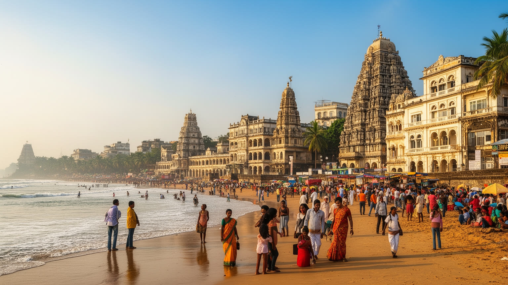
チェンナイ観光は、巨大な記念碑だけを巡る旅ではなく、海岸、寺院、聖堂、市場、博物館、音楽、食を組み合わせて都市の層を読む旅です。マリーナ・ビーチでは朝の散歩、運動、屋台、政治集会、漁業の気配が重なり、マイラポールでは寺院の塔、花屋、食堂、古い住宅地が日常の信仰を見せます。サントメ聖堂はキリスト教の歴史を伝え、フォート・セント・ジョージ周辺は植民地支配と港湾都市の記憶を残します。博物館、芸術ホール、映画館、音楽季の会場は、タミル文化を内外へ発信します。T NagarやPondy Bazaarの買い物、魚市場の早朝、フィルターコーヒーの香り、ドーサの鉄板音も旅の記憶になります。観光客にとっての名所は、住民にとっては通勤路、祈りの場所、商売の場、夕涼みの浜辺でもあります。観光の成功は、写真を撮る場所を増やすことだけではなく、清掃、歩行環境、公共交通、海岸の安全、地域の商い、遺産建築の維持を支えることにかかります。名所を点で消費するより、海から市場、寺院、食堂、劇場へ続く生活の流れを感じる時に深まります。周辺のマハーバリプラムやカーンチープラムへ向かう旅も、南インド遺産の入口になります。地元の交通、浜辺のごみ、遺産地区の家賃上昇にも目を向けたいです。朝夕の涼しい時間を使う歩き方も、この都市の気候に合っています。
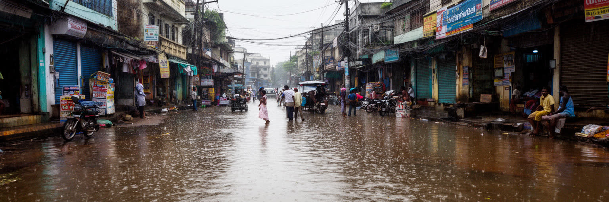
チェンナイの気候リスクは、酷暑、湿度、北東モンスーンの豪雨、サイクロン、洪水、水不足が同じ都市で入れ替わる点にあります。夏には強い日差しと湿った空気が屋外労働者、配達員、警備員、露店商、通勤者、高齢者に負担をかけ、冷房を使える人と使えない人の差を広げます。海風は救いにもなるが、肌に残る湿気は疲労を増やします。雨季には短時間の豪雨が道路、鉄道、地下施設、低地の住宅を止め、バスの行列や列車の遅れ、オートリキシャの水しぶきが日常の音を変えます。乾いた時期には貯水池、地下水、タンク車に頼る地域があり、水の確保が家計と時間を圧迫します。湿地や湖を埋めた開発、排水路の詰まり、廃棄物管理の不足は、自然の水の流れを弱めます。気候対策は堤防やポンプだけでは足りません。街路樹、日陰、公共交通、涼める施設、排水路の維持、湿地保全、安全な低所得者住宅、早期警報、医療へのアクセスが必要になります。学校の休校、病院への移動、工場の操業、食料配送は、暑さと豪雨に直接左右されます。水害後の感染症や家財の損失は、貧しい世帯ほど回復を難しくします。暑熱時の休憩所、飲み水、労働時間の調整は命を守る政策です。洪水地図を住民が理解できる形で共有することも、避難と復旧を早めます。気候リスクは非常時だけでなく、毎日の設計に入り込みます。
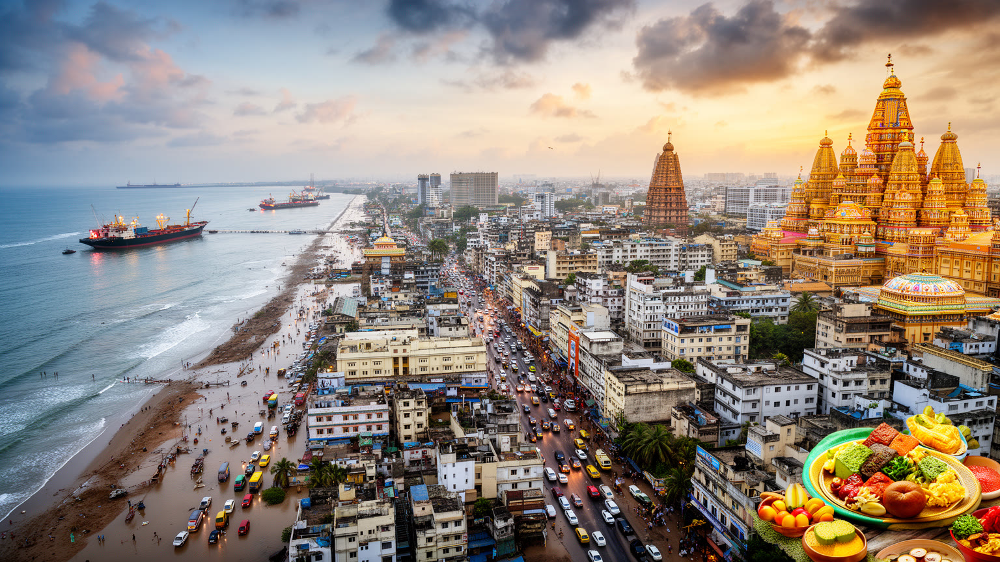
チェンナイの重要性は、単に人口やGDPの規模にあるのではありません。ベンガル湾の港、州都の政治、自動車産業、IT回廊、医療と教育、タミル映画、古典音楽、寺院と教会、浜辺の公共空間、洪水と水不足が、一つの都市圏で互いに影響し合っています。ムンバイの金融やデリーの政治とは違い、チェンナイは製造業と文化言語の厚み、海岸生活と工業回廊の距離の近さによって南インドの都市像を示します。工場で働く人、IT企業に通う若者、音楽会へ向かう家族、CSKを語る子ども、チェス盤を囲む学生、寺院の花売り、港の作業員、看護師、漁業者、露店商は、別々の世界に見えて同じ水、道路、暑さ、住宅市場を共有しています。都市の魅力は穏やかな海風や食文化だけではなく、急成長の利益と環境リスク、専門職の機会と非公式労働、文化の誇りと社会の境界が近い距離で交渉される点にあります。工業生産、信仰、芸術、スポーツ、医療、日常の暑さを同じ地図に置くと、南アジア沿岸都市の未来が見えます。成長の数字が大きくなるほど、湿地、漁村、低所得者住宅、公共交通、女性の安全、子どもの遊び場、高齢者の健康をどう守るかが問われます。チェンナイは派手さだけで勝負する都市ではなく、働く制度、家族の時間、地域言語の自尊心を積み重ねる都市です。その持続力が、インド洋世界における存在感を支えています。